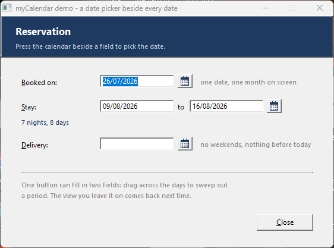
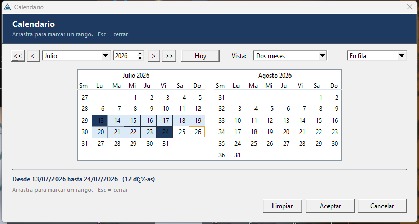
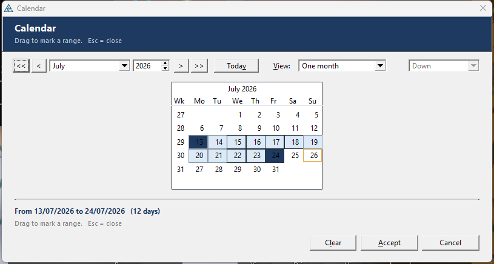
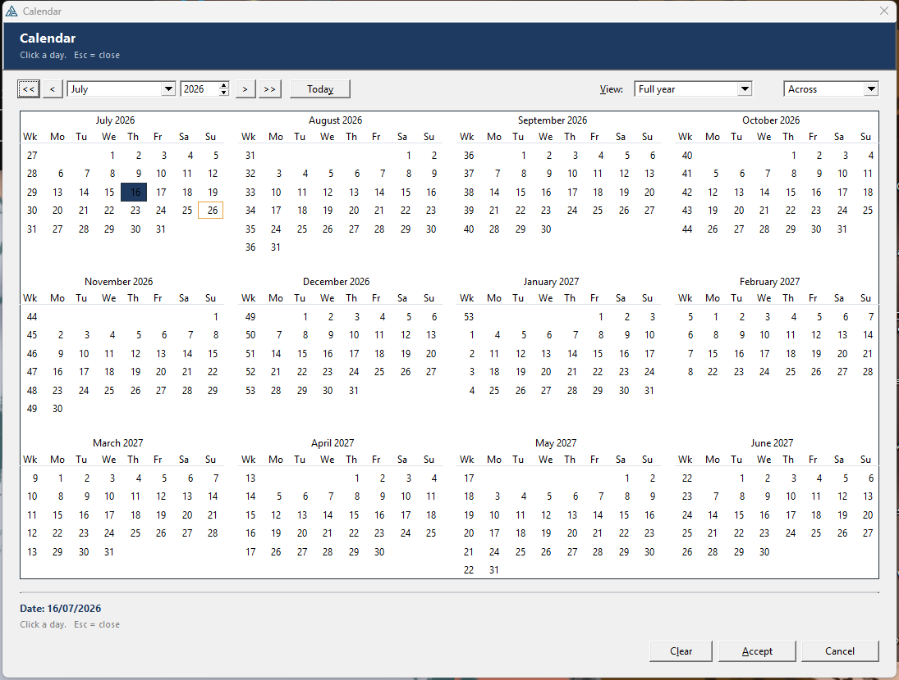
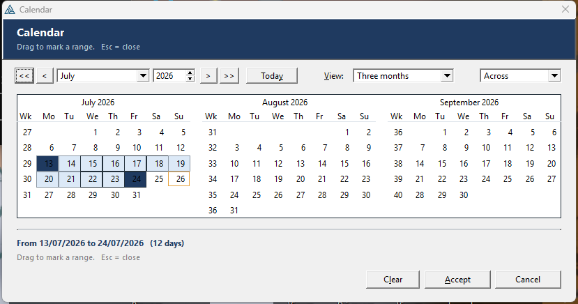
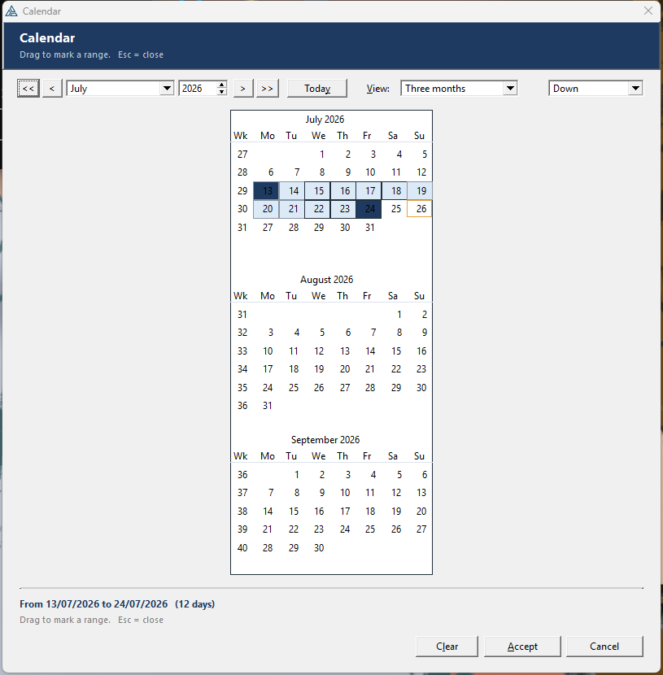

myCalendar
A pop-up date picker beside any date field — one month, three, or a whole year on screen, stacked across or down. Drag across the days to sweep out a from/to range and one button fills in two fields. Pure Clarion, in English or Spanish.
Un selector de fechas emergente junto a cualquier campo de fecha: un mes, tres o un año entero en pantalla, en fila o en columna. Arrastra sobre los días para marcar un rango desde/hasta y un solo botón rellena dos campos. Clarion puro, en inglés o español.
1 · 2 · 3 · 6 · 12 months · drag a range · week numbers · EN / ES · no dependencies 1 · 2 · 3 · 6 · 12 meses · rango arrastrando · números de semana · EN / ES · sin dependenciasOverviewResumen #
Drag myCalendar - Calendar button next to a date entry and point it at that entry. A small calendar icon appears beside the field; pressing it opens a modal calendar already sitting on whatever the field contains, and Accept puts the date back.

Set the same button to a from-and-to range and it serves two fields: the user drags across the days — over as many months as are on screen — and Accept writes the first day into the FROM field and the last into the TO field.
| myCalendar | |
|---|---|
| Needs a DLL / OCX / control | No — pure Clarion, nothing to deploy |
| On screen at once | 1, 2, 3 or 6 months, or a full year |
| Stacking | Across (side by side) or down (one under the other) |
| Picks | One date, or a from/to range swept out with the mouse |
| Navigation | << year, < month, a month drop, a year spin, > month, >> year, Today |
| Options | ISO week numbers, first day of the week, today ringed, weekends blocked, min/max |
| Remembers | The view, the stacking and the week options, between runs |
| Languages | English and Spanish, set once for the whole application |
Arrastra myCalendar - Calendar button junto a un campo de fecha y apúntalo a ese campo. Aparece un pequeño icono de calendario al lado; al pulsarlo se abre un calendario modal situado ya en lo que hubiera en el campo, y Aceptar devuelve la fecha.
Pon ese mismo botón en modo rango desde/hasta y atenderá a dos campos: el usuario arrastra sobre los días —por todos los meses que haya en pantalla— y Aceptar escribe el primer día en el campo DESDE y el último en el campo HASTA.
| myCalendar | |
|---|---|
| ¿Necesita DLL / OCX / control? | No — Clarion puro, nada que instalar |
| En pantalla a la vez | 1, 2, 3 o 6 meses, o un año completo |
| Colocación | En fila (uno al lado del otro) o en columna (uno debajo del otro) |
| Selecciona | Una fecha, o un rango desde/hasta marcado con el ratón |
| Navegación | << año, < mes, lista de meses, spin de año, > mes, >> año, Hoy |
| Opciones | Semanas ISO, primer día de la semana, hoy resaltado, fines de semana bloqueados, mín/máx |
| Recuerda | La vista, la colocación y las opciones de semana, entre ejecuciones |
| Idiomas | Inglés y español, se fija una vez para toda la aplicación |
Install & registerInstalar y registrar #
- Copy
templates/myCalendar/CalendarClass.inc,CalendarClass.clwandcal16.icoto a folder on the Clarion redirection path (your app folder, or\clarion12\libsrc\win). The two source files must be ANSI with CRLF line endings. - Copy
templates/myCalendar/myCalendar.tplinto your template folder. - In the IDE: Setup ▸ Template Registry ▸ Register, pick
myCalendar.tpl. - Add the global extension myCalendar - Global to the application once (Global Properties ▸ Extensions ▸ Insert) and set the language and defaults there.
- Open a window, and from the control-template list drag myCalendar - Calendar button beside a date field next to the entry you want it to fill in.
- Set Date field to fill in to that entry. That is the only required prompt.
├── myCalendar.tpl the template set — register this
├── CalendarClass.inc the class — on the redirection path
├── CalendarClass.clw links itself into the build
└── cal16.ico the button icon — build time only
ICON() into the executable's own resources and
CalendarClass.clw is linked in by its LINK attribute, so the finished
program is a single EXE with no extra files beside it.- Copia
templates/myCalendar/CalendarClass.inc,CalendarClass.clwycal16.icoa una carpeta de la ruta de redirección de Clarion (la carpeta de tu app, o\clarion12\libsrc\win). Los dos fuentes deben ser ANSI con saltos de línea CRLF. - Copia
templates/myCalendar/myCalendar.tpla tu carpeta de plantillas. - En el IDE: Setup ▸ Template Registry ▸ Register, elige
myCalendar.tpl. - Añade la extensión global myCalendar - Global una vez a la aplicación (Global Properties ▸ Extensions ▸ Insert) y fija allí el idioma y los valores por defecto.
- Abre una ventana y, de la lista de plantillas de control, arrastra myCalendar - Calendar button beside a date field junto al campo que quieras rellenar.
- Pon Date field to fill in apuntando a ese campo. Es el único prompt obligatorio.
├── myCalendar.tpl el juego de plantillas — regístralo
├── CalendarClass.inc la clase — en la ruta de redirección
├── CalendarClass.clw se enlaza sola en la compilación
└── cal16.ico el icono del botón — solo al compilar
ICON() dentro de los recursos del ejecutable y
CalendarClass.clw se enlaza por su atributo LINK, así que el programa
terminado es un único EXE sin ficheros extra al lado.One button, two fieldsUn botón, dos campos #
Set Pick to a from-and-to range and the same button serves two entries. Point From date field and To date field at them and you are done.
IF Cal2.AskRange(LOC:From,LOC:To) ! seeds from both, writes both back DISPLAY(?LOC:From) DISPLAY(?LOC:To) END
AskRange opens on the FROM date with both ends already marked, and hands them back the
right way round however the user swept them. If only one day ends up picked, both fields get that
day — a one-day range, which is what a user who clicked once meant.
Pon Pick en rango desde/hasta y el mismo botón atiende a dos campos. Apunta From date field y To date field a ellos y ya está.
IF Cal2.AskRange(LOC:From,LOC:To) ! toma ambos y devuelve ambos DISPLAY(?LOC:From) DISPLAY(?LOC:To) END
AskRange abre sobre la fecha DESDE con los dos extremos ya marcados, y los devuelve en
el orden correcto sin importar hacia dónde arrastrara el usuario. Si solo queda un día
seleccionado, los dos campos reciben ese día: un rango de un solo día, que es lo que quería decir
quien hizo un único clic.
Already have a button or menu?¿Ya tienes un botón o un menú? #
Use the code template myCalendar - Open the calendar and return a date. Drop it into any embed — a button's Accepted, a menu item, a hot key — and fill in the variable it should read and write. Everything the control template offers is on its prompts too.
It works on plain variables as well as file fields, so it is the way in when the target is not an entry on the window at all:
! dropped in ?PrintRange, Accepted Cal3.Months = 3 Cal3.Orient = Cal:Across Cal3.Language = myCalendarLanguage IF Cal3.AskRange(LOC:PeriodFrom,LOC:PeriodTo) DISPLAY(?PeriodText) END
,PROCEDURE, which lets it own a %DataSection entry of
its own (the same trick the shipped ABPOPUP.TPW uses). You do not have to declare
anything by hand.Usa la plantilla de código myCalendar - Open the calendar and return a date. Suéltala en cualquier embed —el Accepted de un botón, un elemento de menú, una tecla rápida— e indica la variable que debe leer y escribir. Tiene los mismos prompts que la plantilla de control.
Funciona igual con variables sueltas que con campos de fichero, así que es la vía cuando el destino no es un campo de la ventana:
! puesta en ?PrintRange, Accepted Cal3.Months = 3 Cal3.Orient = Cal:Across Cal3.Language = myCalendarLanguage IF Cal3.AskRange(LOC:PeriodFrom,LOC:PeriodTo) DISPLAY(?PeriodText) END
,PROCEDURE, lo que le permite tener su propia entrada en
%DataSection (el mismo truco que usa el ABPOPUP.TPW de Clarion). No tienes
que declarar nada a mano.Application defaultsValores de la aplicación #
The global extension myCalendar - Global holds what every calendar in the application starts from. Add it once, in Global Properties ▸ Extensions. It emits five real globals:
myCalendarLanguage BYTE(1) ! 1 = English, 2 = Espanol myCalendarFirstDay BYTE(0) ! 0 = Sunday, 1 = Monday myCalendarView BYTE(1) ! months on screen: 1 2 3 6 12 myCalendarOrient BYTE(0) ! 0 = across, 1 = down myCalendarWeekNo BYTE(0) ! show the week-number gutter
Every button emits Cal1.Months = myCalendarView and so on, unless you set that prompt
to something other than Use the application setting — then it emits the literal instead.
Change the global and the whole application follows on the next generate.
myCalendarLanguage = Cal:Spanish in your start-up code, driven by the user's own
preference, and every calendar opened afterwards is in Spanish.La extensión global myCalendar - Global guarda el punto de partida de todos los calendarios de la aplicación. Añádela una vez, en Global Properties ▸ Extensions. Genera cinco variables globales reales:
myCalendarLanguage BYTE(1) ! 1 = ingles, 2 = espanol myCalendarFirstDay BYTE(0) ! 0 = domingo, 1 = lunes myCalendarView BYTE(1) ! meses en pantalla: 1 2 3 6 12 myCalendarOrient BYTE(0) ! 0 = en fila, 1 = en columna myCalendarWeekNo BYTE(0) ! mostrar la columna de semanas
Cada botón genera Cal1.Months = myCalendarView y demás, salvo que pongas ese prompt en
algo distinto de Use the application setting: entonces genera el literal. Cambia el global y
toda la aplicación le sigue en la siguiente generación.
myCalendarLanguage = Cal:Spanish en el arranque, según la preferencia del usuario, y
todos los calendarios que se abran después salen en español.LanguageIdioma #
The whole window is translated: the month names, the day headings, the view list, the across/down list, Today, Clear, Accept, Cancel, the hint line and the footer that reads the selection back.

| Set it | Where | Effect |
|---|---|---|
| For the application | myCalendar - Global ▸ Defaults ▸ Calendar language | Every calendar, everywhere. |
| For one button | The button's View tab ▸ Language | Overrides the application for that button only. |
| At run time | Cal1.Language = Cal:Spanish | Before the call, from any embed. |
Toda la ventana está traducida: los nombres de los meses, las cabeceras de los días, la lista de vistas, la lista fila/columna, Hoy, Limpiar, Aceptar, Cancelar, la línea de ayuda y el pie que muestra la selección.
| Dónde se fija | Sitio | Efecto |
|---|---|---|
| Para la aplicación | myCalendar - Global ▸ Defaults ▸ Calendar language | Todos los calendarios, en todas partes. |
| Para un botón | Pestaña View del botón ▸ Language | Manda sobre la aplicación solo para ese botón. |
| En ejecución | Cal1.Language = Cal:Spanish | Antes de la llamada, desde cualquier embed. |
Remembering the last sessionRecordar la última sesión #
With Remember the view and options between runs ticked (it is, by default) the calendar comes back the way the user left it. Five things are saved:
| Saved | Property |
|---|---|
| How many months were on screen | Months |
| Across or down | Orient |
| First day of the week | FirstDay |
| The week-number gutter | ShowWeekNo |
| The ring around today | ShowToday |
They go into the application's own INI file — <exe>.INI, found with
GetModuleFileNameA — under a section named after the profile. Leave the profile
prompt blank and it is the procedure name, so two windows never tread on each other. Give two
buttons the same profile on purpose and they share a view.
! MyApp.INI [myCalendar_UpdateOrder] Months=3 Orient=1 FirstDay=1 ShowWeekNo=1 ShowToday=1
Restored values are checked before use: an impossible month count falls back to one month, and an out-of-range first day or orientation falls back to zero. A hand-edited or corrupt INI cannot break the window.
ForgetSettings() removes the section, so the next open starts from the template's
defaults again.
Con Remember the view and options between runs marcado (lo está por defecto) el calendario vuelve tal y como lo dejó el usuario. Se guardan cinco cosas:
| Se guarda | Propiedad |
|---|---|
| Cuántos meses había en pantalla | Months |
| En fila o en columna | Orient |
| Primer día de la semana | FirstDay |
| La columna de números de semana | ShowWeekNo |
| El recuadro de hoy | ShowToday |
Van al fichero INI de la propia aplicación —<exe>.INI, localizado con
GetModuleFileNameA— en una sección con el nombre del perfil. Si dejas el prompt
del perfil en blanco, se usa el nombre del procedimiento, así que dos ventanas nunca se pisan. Si le
das a propósito el mismo perfil a dos botones, comparten la vista.
! MyApp.INI [myCalendar_UpdateOrder] Months=3 Orient=1 FirstDay=1 ShowWeekNo=1 ShowToday=1
Los valores restaurados se comprueban antes de usarlos: un número de meses imposible vuelve a un mes, y un primer día o una orientación fuera de rango vuelven a cero. Un INI corrupto o editado a mano no puede romper la ventana.
ForgetSettings() borra la sección, así que la siguiente apertura parte otra vez de los
valores de la plantilla.
Views: one month to a full yearVistas: de un mes a un año entero #
The View drop in the window changes how many months are on screen, and the window resizes itself to fit. The five views and the grid each one uses:
| View | Equate | Across | Down |
|---|---|---|---|
| One month | Cal:OneMonth | 1 × 1 | 1 × 1 |
| Two months | Cal:TwoMonths | 2 × 1 | 1 × 2 |
| Three months | Cal:ThreeMonths | 3 × 1 | 1 × 3 |
| Six months | Cal:SixMonths | 3 × 2 | 2 × 3 |
| Full year | Cal:Year | 4 × 3 | 3 × 4 |


The whole year is one canvas, so a range can start in March and end in November without ever touching the navigation. The month drop and the year spin always point at the first month on screen, and < / > move that first month by one; << / >> move it by a year.
La lista Vista de la ventana cambia cuántos meses hay en pantalla, y la ventana se redimensiona sola. Las cinco vistas y la rejilla que usa cada una:
| Vista | Equate | En fila | En columna |
|---|---|---|---|
| Un mes | Cal:OneMonth | 1 × 1 | 1 × 1 |
| Dos meses | Cal:TwoMonths | 2 × 1 | 1 × 2 |
| Tres meses | Cal:ThreeMonths | 3 × 1 | 1 × 3 |
| Seis meses | Cal:SixMonths | 3 × 2 | 2 × 3 |
| Año completo | Cal:Year | 4 × 3 | 3 × 4 |
El año entero es un único lienzo, así que un rango puede empezar en marzo y terminar en noviembre sin tocar la navegación. La lista de meses y el spin del año apuntan siempre al primer mes en pantalla, y < / > mueven ese primer mes de uno en uno; << / >> lo mueven un año.
Across or downEn fila o en columna #
Two and three months can go either way — across for a wide, short window, or down for a tall, narrow one. Six and twelve simply transpose their grid. The drop next to the view list flips it, and the choice is remembered.


Pick the one that fits the window the button lives on. A form that is already tall has room for down; a wide report-options screen suits across.
Cal1.Months = Cal:ThreeMonths
Cal1.Orient = Cal:Down ! 1 x 3 instead of 3 x 1
Dos y tres meses pueden ir de las dos formas: en fila para una ventana ancha y baja, o en columna para una alta y estrecha. Seis y doce simplemente trasponen su rejilla. La lista que hay junto a la de vistas lo cambia, y la elección se recuerda.
Elige la que encaje en la ventana donde vive el botón. Un formulario que ya es alto tiene sitio para en columna; una pantalla ancha de opciones de informe pide en fila.
Cal1.Months = Cal:ThreeMonths
Cal1.Orient = Cal:Down ! 1 x 3 en vez de 3 x 1
Dragging a rangeArrastrar un rango #
In range mode the user holds the button down on the first day and sweeps to the last — across weeks, across months, across the whole year if that is the view. The selection follows the mouse live, so what you see while dragging is what you get.
| Gesture | Result |
|---|---|
| Press and drag | Marks from the day under the press to the day under the mouse. |
| Click one day, then another | The first opens the range, the second closes it. |
| Click a third day | Starts a new range at that day. |
| Drag backwards | Fine — the ends are sorted before they are handed back. |
| Clear | Empties the selection; Accept then writes zero dates. |
The two ends are drawn solid navy with white numbers; the days in between get a light blue wash. The footer counts the days as you go — From 13/07/2026 to 24/07/2026 (12 days).
Days() returns that count, inclusive of both ends, and InSelection(date)
answers 0 (no), 1 (an end) or 2 (in between).
En modo rango el usuario mantiene pulsado sobre el primer día y arrastra hasta el último: por semanas, por meses, o por el año entero si esa es la vista. La selección sigue al ratón en vivo, así que lo que se ve mientras se arrastra es lo que queda.
| Gesto | Resultado |
|---|---|
| Pulsar y arrastrar | Marca desde el día donde se pulsó hasta el día bajo el ratón. |
| Clic en un día y luego en otro | El primero abre el rango, el segundo lo cierra. |
| Clic en un tercer día | Empieza un rango nuevo en ese día. |
| Arrastrar hacia atrás | Sin problema: los extremos se ordenan antes de devolverlos. |
| Limpiar | Vacía la selección; Aceptar escribe entonces fechas a cero. |
Los dos extremos se dibujan en azul marino sólido con el número en blanco; los días intermedios llevan un fondo azul claro. El pie va contando los días: Del 13/07/2026 al 24/07/2026 (12 días).
Days() devuelve esa cuenta, incluyendo los dos extremos, y
InSelection(fecha) responde 0 (no), 1 (un extremo) o 2 (en medio).
The week, the limits, the weekendsLa semana, los límites, los fines de semana #
First day of the week
Cal:Sunday or Cal:Monday. It moves the whole grid, not just the heading
row, so the columns always line up under the day names.
Week numbers
ShowWeekNo = 1 adds a narrow gutter down the left of every month with the
ISO-8601 week number of each row — the week that contains the Thursday, so the turn of the
year lands where a European calendar expects it (1 January 2026 is week 1, 4 January 2027 is week 1).
Limits
MinDate and MaxDate grey out everything outside the window and make it
deaf to the mouse. Either can be left at zero for "no limit".
Cal3.MinDate = TODAY() ! nothing in the past Cal3.MaxDate = TODAY() + 90 ! and no further than a quarter out
Weekends
NoWeekends = 1 blocks Saturdays and Sundays the same way — a delivery date, a working
day, a court date. Weekend numbers are drawn muted whether or not they are blocked, so the shape of
the week is always readable.
Primer día de la semana
Cal:Sunday o Cal:Monday. Mueve toda la rejilla, no solo la fila de
cabecera, así que las columnas siempre quedan bajo el nombre de su día.
Números de semana
ShowWeekNo = 1 añade una columna estrecha a la izquierda de cada mes con el número de
semana ISO-8601 de cada fila: la semana que contiene el jueves, de modo que el cambio de año
cae donde lo espera un calendario europeo (el 1 de enero de 2026 es la semana 1, el 4 de enero de
2027 es la semana 1).
Límites
MinDate y MaxDate atenúan todo lo que quede fuera y lo dejan sordo al
ratón. Cualquiera de los dos puede quedarse a cero para «sin límite».
Cal3.MinDate = TODAY() ! nada en el pasado Cal3.MaxDate = TODAY() + 90 ! y no mas alla de un trimestre
Fines de semana
NoWeekends = 1 bloquea sábados y domingos de la misma forma: una fecha de entrega, un
día laborable, una fecha de juicio. Los números del fin de semana se dibujan atenuados estén
bloqueados o no, para que la forma de la semana siempre se lea.
Mouse & keyboardRatón y teclado #
| Do this | Get that |
|---|---|
| Click a day | Picks it (single mode), or opens / closes the range. |
| Press and sweep | Marks a range, live. |
| Esc | Closes without changing anything — the same as Cancel. |
| Tab | Moves through the navigation controls and the buttons as usual. |
| The year spin | Type a year straight into it, or use the arrows. 1801 to 2500. |
| Today | Jumps the view to this month without picking anything. |
| Clear | Empties the selection. |
BOX / LINE / SHOW,
and a transparent REGION over the top collects the mouse. That is what makes a whole year cheap
enough to draw — and why the days themselves are not in the tab order.| Haz esto | Y pasa esto |
|---|---|
| Clic en un día | Lo selecciona (modo simple), o abre / cierra el rango. |
| Pulsar y arrastrar | Marca un rango, en vivo. |
| Esc | Cierra sin cambiar nada — igual que Cancelar. |
| Tab | Recorre los controles de navegación y los botones como siempre. |
| El spin del año | Teclea el año directamente, o usa las flechas. De 1801 a 2500. |
| Hoy | Lleva la vista a este mes sin seleccionar nada. |
| Limpiar | Vacía la selección. |
BOX / LINE / SHOW nativos, y
un REGION transparente encima recoge el ratón. Eso es lo que hace barato dibujar un año entero, y
también por qué los días no entran en el orden de tabulación.Class referenceReferencia de la clase #
Equates
| Group | Equates |
|---|---|
| View | Cal:OneMonth Cal:TwoMonths Cal:ThreeMonths Cal:SixMonths Cal:Year |
| Stacking | Cal:Across (0) Cal:Down (1) |
| Selection | Cal:Single (0) Cal:Range (1) |
| Week | Cal:Sunday (0) Cal:Monday (1) |
| Language | Cal:English (1) Cal:Spanish (2) |
Properties
| Property | Type | Meaning |
|---|---|---|
Months | BYTE | 1, 2, 3, 6 or 12 on screen. Anything else falls back to 1. |
Orient | BYTE | Cal:Across or Cal:Down. |
Selection | BYTE | Cal:Single or Cal:Range. |
Date1 / Date2 | LONG | The date, or the two ends of the range. Date2 is 0 for a single date. |
Anchor | LONG | Any date in the first month shown. Drives the view. |
FirstDay | BYTE | Cal:Sunday or Cal:Monday. |
ShowWeekNo | BYTE | The ISO week gutter. |
ShowToday | BYTE | Ring today. On by default. |
NoWeekends | BYTE | Saturdays and Sundays cannot be picked. |
MinDate / MaxDate | LONG | Limits; 0 = no limit. |
Title | CSTRING(64) | The window caption. Blank = the localised word. |
Language | BYTE | Cal:English / Cal:Spanish. |
DatePicture | CSTRING(16) | How the footer reads dates. Default @d17. |
Persist / Profile / IniFile | See Remembering. | |
Accepted | BYTE | 1 if the user pressed Accept. |
GridCols GridRows BlockW BlockH CanvasW CanvasH | LONG | Filled in by Layout(). Public so you can size your own IMAGE — see Driving it from code. |
Methods
| Method | Returns | What it does |
|---|---|---|
AskFor(*? pDate) | BYTE | Opens on pDate, writes the picked date back into it. 1 = accepted. |
AskRange(*? pFrom,*? pTo) | BYTE | The same for a from/to pair, in the right order. |
Ask() | BYTE | Just ask. Read Date1 / Date2 afterwards. VIRTUAL. |
Reset() | Nothing picked, back to today. | |
SetDate(date) SetRange(from,to) | Set the selection (and the anchor) from code. | |
GoToday() GoMonth(n) GoYear(n) | Move the view. n may be negative. | |
Pick(date) | As if the user clicked that day — opens, closes or restarts the range. | |
Days() | LONG | How many days the selection spans, both ends counted. |
Pickable(date) | BYTE | Inside the limits and not a blocked weekend. |
InSelection(date) | BYTE | 0 no, 1 an end, 2 in between. |
AddMonths(date,n) | LONG | Month arithmetic, clamped: 31 Jan + 1 month = 28 Feb (29 in a leap year). |
DaysInMonth(m,y) DayOfWeek(d) ColumnOf(d) WeekNumber(d) FirstOfMonth(d) | LONG | The date maths, all usable on their own. |
MonthName(m) DayName(col) DateText(d) Txt(id) | STRING | Localised text. |
Layout() | Works out the grid and the canvas size for Months / Orient. | |
Draw(window,?image) | Paints the whole grid into any IMAGE on any window. | |
DateAt(x,y) | LONG | The day under a canvas coordinate, or 0. |
LoadSettings() SaveSettings() ForgetSettings() | The INI file. |
Equates
| Grupo | Equates |
|---|---|
| Vista | Cal:OneMonth Cal:TwoMonths Cal:ThreeMonths Cal:SixMonths Cal:Year |
| Colocación | Cal:Across (0) Cal:Down (1) |
| Selección | Cal:Single (0) Cal:Range (1) |
| Semana | Cal:Sunday (0) Cal:Monday (1) |
| Idioma | Cal:English (1) Cal:Spanish (2) |
Propiedades
| Propiedad | Tipo | Significado |
|---|---|---|
Months | BYTE | 1, 2, 3, 6 o 12 en pantalla. Cualquier otra cosa vuelve a 1. |
Orient | BYTE | Cal:Across o Cal:Down. |
Selection | BYTE | Cal:Single o Cal:Range. |
Date1 / Date2 | LONG | La fecha, o los dos extremos del rango. Date2 es 0 en fecha simple. |
Anchor | LONG | Cualquier fecha del primer mes mostrado. Es lo que mueve la vista. |
FirstDay | BYTE | Cal:Sunday o Cal:Monday. |
ShowWeekNo | BYTE | La columna de semanas ISO. |
ShowToday | BYTE | Resaltar hoy. Activo por defecto. |
NoWeekends | BYTE | No se pueden elegir sábados ni domingos. |
MinDate / MaxDate | LONG | Límites; 0 = sin límite. |
Title | CSTRING(64) | El título de la ventana. En blanco = la palabra traducida. |
Language | BYTE | Cal:English / Cal:Spanish. |
DatePicture | CSTRING(16) | Cómo lee las fechas el pie. Por defecto @d17. |
Persist / Profile / IniFile | Ver Recordar. | |
Accepted | BYTE | 1 si el usuario pulsó Aceptar. |
GridCols GridRows BlockW BlockH CanvasW CanvasH | LONG | Los rellena Layout(). Son públicos para que puedas dimensionar tu propio IMAGE — ver Desde tu propio código. |
Métodos
| Método | Devuelve | Qué hace |
|---|---|---|
AskFor(*? pDate) | BYTE | Abre en pDate y escribe allí la fecha elegida. 1 = aceptado. |
AskRange(*? pFrom,*? pTo) | BYTE | Lo mismo para un par desde/hasta, en el orden correcto. |
Ask() | BYTE | Solo preguntar. Después lee Date1 / Date2. VIRTUAL. |
Reset() | Nada seleccionado, de vuelta a hoy. | |
SetDate(fecha) SetRange(desde,hasta) | Fija la selección (y el ancla) desde código. | |
GoToday() GoMonth(n) GoYear(n) | Mueve la vista. n puede ser negativo. | |
Pick(fecha) | Como si el usuario hiciera clic en ese día: abre, cierra o reinicia el rango. | |
Days() | LONG | Cuántos días abarca la selección, contando los dos extremos. |
Pickable(fecha) | BYTE | Dentro de los límites y no es un fin de semana bloqueado. |
InSelection(fecha) | BYTE | 0 no, 1 un extremo, 2 en medio. |
AddMonths(fecha,n) | LONG | Aritmética de meses, con ajuste: 31 ene + 1 mes = 28 feb (29 en bisiesto). |
DaysInMonth(m,a) DayOfWeek(f) ColumnOf(f) WeekNumber(f) FirstOfMonth(f) | LONG | La aritmética de fechas, utilizable por separado. |
MonthName(m) DayName(col) DateText(f) Txt(id) | STRING | Texto traducido. |
Layout() | Calcula la rejilla y el tamaño del lienzo para Months / Orient. | |
Draw(ventana,?imagen) | Pinta toda la rejilla en cualquier IMAGE de cualquier ventana. | |
DateAt(x,y) | LONG | El día bajo una coordenada del lienzo, o 0. |
LoadSettings() SaveSettings() ForgetSettings() | El fichero INI. |
ColoursColores #
Every colour is a public property, as a Clarion BGR long. Assign before the call to restyle the whole calendar:
| Property | Default | Paints |
|---|---|---|
BackColor | 0FFFFFFH | The paper |
TitleColor | 0603A1FH | The month name |
InkColor | 03B3023H | Weekday numbers |
MutedColor | 0A3968AH | Weekend numbers, the day headings |
LineColor | 0EAE3DCH | The rules |
SelColor / SelTextColor | 0603A1FH / white | A picked day |
RangeColor | 0F7E9DCH | The days between the two ends |
TodayColor | 03DA3E8H | The ring around today |
0BBGGRRH. The navy above is #1F3A60 in
HTML and 0603A1FH in Clarion — the same three bytes, back to front.Cada color es una propiedad pública, como long BGR de Clarion. Asígnalos antes de la llamada para cambiar el aspecto de todo el calendario:
| Propiedad | Por defecto | Pinta |
|---|---|---|
BackColor | 0FFFFFFH | El papel |
TitleColor | 0603A1FH | El nombre del mes |
InkColor | 03B3023H | Números de los días laborables |
MutedColor | 0A3968AH | Números del fin de semana, cabeceras de días |
LineColor | 0EAE3DCH | Las líneas |
SelColor / SelTextColor | 0603A1FH / blanco | Un día seleccionado |
RangeColor | 0F7E9DCH | Los días entre los dos extremos |
TodayColor | 03DA3E8H | El recuadro de hoy |
0BBGGRRH. El azul marino de arriba es
#1F3A60 en HTML y 0603A1FH en Clarion: los mismos tres bytes, al revés.Driving it from codeDesde tu propio código #
The class is useful without the pop-up at all. Layout() works out the canvas size and
Draw() paints into any IMAGE on any window of yours — an always-visible month on a
dashboard, say, with your own hit handling through DateAt():
Cal CalendarClass Wnd WINDOW('Planner'),AT(,,400,300),SYSTEM,GRAY IMAGE,AT(10,10,200,150),USE(?Canvas) REGION,AT(10,10,200,150),USE(?Hot),IMM END CODE Cal.Months = Cal:ThreeMonths Cal.Orient = Cal:Down Cal.ShowWeekNo = 1 Cal.Layout() ! now CanvasW / CanvasH are known OPEN(Wnd) ?Canvas{PROP:Width} = Cal.CanvasW ! size the image to fit ?Canvas{PROP:Height} = Cal.CanvasH ?Hot{PROP:Width} = Cal.CanvasW ?Hot{PROP:Height} = Cal.CanvasH Cal.Draw(Wnd,?Canvas) ACCEPT IF FIELD() = ?Hot AND EVENT() = EVENT:MouseDown d = Cal.DateAt(MOUSEX() - ?Canvas{PROP:Xpos},MOUSEY() - ?Canvas{PROP:Ypos}) IF d AND Cal.Pickable(d) Cal.Pick(d) Cal.Draw(Wnd,?Canvas) END END END
The date maths stands alone too — AddMonths, DaysInMonth,
WeekNumber and DayOfWeek need no window and no object state.
Ask
It is VIRTUAL. Derive the class and replace the whole window with your own if the shipped one is not
the shape you want — everything below it keeps working.La clase es útil aun sin la ventana emergente. Layout() calcula el tamaño del lienzo y
Draw() pinta en cualquier IMAGE de cualquier ventana tuya —un mes siempre visible en un
panel, por ejemplo— con tu propio manejo del ratón a través de DateAt():
Cal CalendarClass Wnd WINDOW('Agenda'),AT(,,400,300),SYSTEM,GRAY IMAGE,AT(10,10,200,150),USE(?Canvas) REGION,AT(10,10,200,150),USE(?Hot),IMM END CODE Cal.Months = Cal:ThreeMonths Cal.Orient = Cal:Down Cal.ShowWeekNo = 1 Cal.Layout() ! ya se conocen CanvasW / CanvasH OPEN(Wnd) ?Canvas{PROP:Width} = Cal.CanvasW ! ajusta el image al tamano ?Canvas{PROP:Height} = Cal.CanvasH ?Hot{PROP:Width} = Cal.CanvasW ?Hot{PROP:Height} = Cal.CanvasH Cal.Draw(Wnd,?Canvas) ACCEPT IF FIELD() = ?Hot AND EVENT() = EVENT:MouseDown d = Cal.DateAt(MOUSEX() - ?Canvas{PROP:Xpos},MOUSEY() - ?Canvas{PROP:Ypos}) IF d AND Cal.Pickable(d) Cal.Pick(d) Cal.Draw(Wnd,?Canvas) END END END
La aritmética de fechas también vale por sí sola: AddMonths,
DaysInMonth, WeekNumber y DayOfWeek no necesitan ventana ni
estado del objeto.
Ask
Es VIRTUAL. Deriva la clase y sustituye toda la ventana por la tuya si la que viene no tiene la
forma que quieres: todo lo demás sigue funcionando.Clarion notesNotas de Clarion #
Things worth knowing, most of them learned the hard way while building this:
| Note | Detail |
|---|---|
| Dates are days | A Clarion date is days since 28 Dec 1800, so date % 7 is the day of the week with 0 = Sunday. 1 Jan 1801 was a Thursday and its value is 4. |
| Month length without a table | DATE(m+1,1,y) - DATE(m,1,y). Clarion normalises month 13 to January of the next year, so December needs no special case, and February is right in every leap year including 1900 and 2000. |
| Two-argument SETTARGET | SETTARGET(window,?image) makes 0,0 the image's own top-left, so all the drawing arithmetic is in canvas coordinates. |
| REGION with IMM | Reports EVENT:MouseDown, MouseMove and MouseUp. MOUSEX() / MOUSEY() are window-relative in the same dialog units as PROP:Xpos, so subtracting the canvas position gives the exact space Draw() used. |
| Paint after the window is up | Drawing before EVENT:OpenWindow can land on nothing. The class paints once before ACCEPT and again on OpenWindow. |
by is reserved | LOOP … BY -1 makes by a keyword; a variable of that name will not compile. (This one cost an afternoon.) |
Do not name a method Format | It shadows the built-in FORMAT() inside the class. The date formatter here is called DateText. |
| ANSI and CRLF | An LF-only .inc produces the baffling Illegal data type: CALENDARCLASS at every use site. The shipped files are correct — keep them that way if you edit them. |
Cosas que conviene saber, casi todas aprendidas a base de golpes al construir esto:
| Nota | Detalle |
|---|---|
| Las fechas son días | Una fecha Clarion son días desde el 28 dic 1800, así que fecha % 7 es el día de la semana con 0 = domingo. El 1 ene 1801 fue jueves y su valor es 4. |
| Días del mes sin tabla | DATE(m+1,1,a) - DATE(m,1,a). Clarion normaliza el mes 13 a enero del año siguiente, así que diciembre no necesita caso especial, y febrero sale bien en todos los bisiestos, 1900 y 2000 incluidos. |
| SETTARGET de dos argumentos | SETTARGET(ventana,?imagen) hace que 0,0 sea la esquina del propio image, así que todo el cálculo del dibujo va en coordenadas del lienzo. |
| REGION con IMM | Informa de EVENT:MouseDown, MouseMove y MouseUp. MOUSEX() / MOUSEY() son relativas a la ventana en las mismas unidades de diálogo que PROP:Xpos, así que restando la posición del lienzo se obtiene el espacio exacto que usó Draw(). |
| Pintar con la ventana ya abierta | Dibujar antes de EVENT:OpenWindow puede caer en el vacío. La clase pinta una vez antes del ACCEPT y otra en OpenWindow. |
by es reservada | LOOP … BY -1 convierte by en palabra clave; una variable con ese nombre no compila. (Esta costó una tarde.) |
No llames Format a un método | Tapa la función FORMAT() dentro de la clase. Aquí el formateador de fechas se llama DateText. |
| ANSI y CRLF | Un .inc con solo LF produce el desconcertante Illegal data type: CALENDARCLASS en cada uso. Los ficheros que se entregan son correctos: mantenlos así si los editas. |
TroubleshootingSolución de problemas #
| Symptom | Cause and cure |
|---|---|
Illegal data type: CALENDARCLASS | CalendarClass.inc has LF-only line endings, or is UTF-8. Save it as ANSI with CRLF. |
Unknown identifier: myCalendarLanguage | The myCalendar - Global extension is missing. Add it to Global Properties — the button normally pulls it in by itself. |
| The button has no icon | cal16.ico is not on the redirection path at build time. It is compiled into the EXE, so it is only needed then. |
| Nothing happens when the button is pressed | The Date field to fill in prompt is empty, or in range mode one of the two field prompts is. The template emits nothing until it knows where the answer goes. |
| Changing the global language does nothing | The button's own Language prompt is set to English or Spanish instead of Use the application setting. |
| Two buttons share a view | They are using the same Profile. Give each its own, or leave the prompt blank to take the procedure name. |
| The calendar opens on today, not on the field | The field was empty or zero. That is intended — there is nothing to open on. |
| The user cannot pick anything | MinDate / MaxDate exclude the whole visible month, or NoWeekends is on and the view is a weekend. |
| The window is wider than the screen | The full year across is 4 × 3 and wants about 1100 px. Use Down, or a smaller view, on low resolutions. |
| Síntoma | Causa y solución |
|---|---|
Illegal data type: CALENDARCLASS | CalendarClass.inc tiene saltos de línea solo LF, o está en UTF-8. Guárdalo como ANSI con CRLF. |
Unknown identifier: myCalendarLanguage | Falta la extensión myCalendar - Global. Agrégala en Global Properties — normalmente el botón la trae sola. |
| El botón sale sin icono | cal16.ico no está en la ruta de redirección al compilar. Se compila dentro del EXE, así que solo hace falta entonces. |
| No pasa nada al pulsar el botón | El prompt Date field to fill in está vacío, o en modo rango lo está uno de los dos. La plantilla no genera nada hasta saber dónde va la respuesta. |
| Cambiar el idioma global no hace nada | El prompt Language del botón está en inglés o español en vez de Use the application setting. |
| Dos botones comparten la vista | Están usando el mismo Profile. Dale uno propio a cada uno, o deja el prompt en blanco para que tome el nombre del procedimiento. |
| El calendario abre en hoy, no en el campo | El campo estaba vacío o a cero. Es lo previsto: no hay fecha sobre la que abrir. |
| El usuario no puede elegir nada | MinDate / MaxDate excluyen todo el mes visible, o NoWeekends está activo y la vista es un fin de semana. |
| La ventana es más ancha que la pantalla | El año completo en fila es 4 × 3 y pide unos 1100 px. Usa En columna, o una vista más pequeña, en resoluciones bajas. |